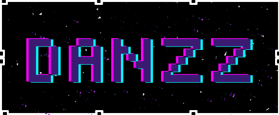
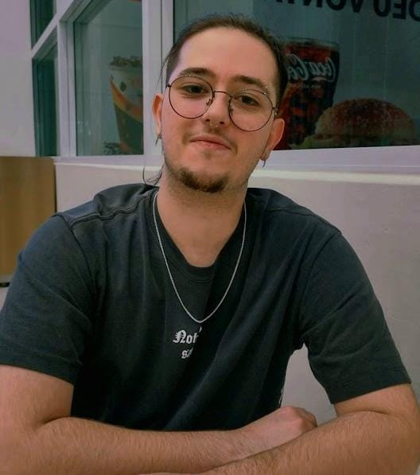
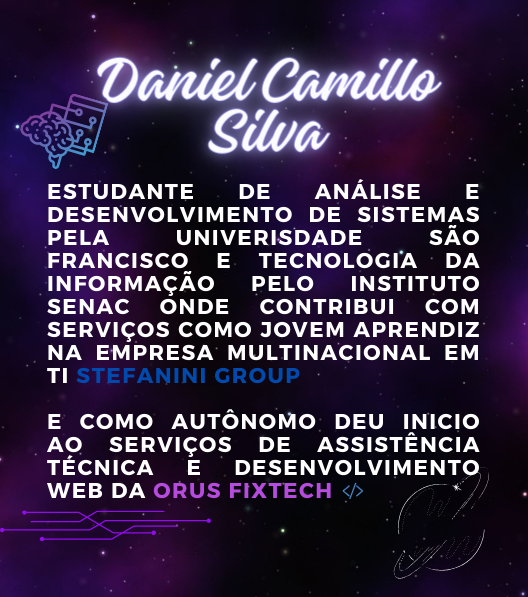
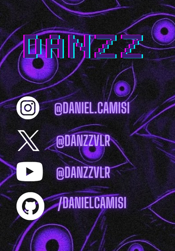

Entre em nosso discord
Meu trabalho


Um pouco sobre mim
Desde a infância, fui imerso no fascinante mundo da tecnologia, eletrônica e jogos eletrônicos, uma influência direta do meu pai. Essa exposição precoce despertou meu interesse intrínseco pela inovação e pelo potencial transformador da tecnologia
Minha trajetória profissional teve início aos 18 anos, quando me matriculei no curso técnico em Desenvolvimento de Sistemas na Etec Bento Quirino. Mesmo começando 'tarde' para alguns, a paixão pelo desenvolvimento de soluções tecnológicas só cresceu.
Durante meus estudos, trabalhei como assistente backoffice na Global Hitss, acumulando quase dois anos de valiosa experiência administrativa. No entanto, a busca por desafios mais significativos me levou a ingressar na Universidade São Francisco para cursar Análise e Desenvolvimento de Sistemas.
Com o tempo, as portas se abriram na Stefanini Group, onde atuo como Jovem Aprendiz, continuando a expandir meus conhecimentos em Tecnologia da Informação. Agora, estou empolgado em compartilhar minha jornada e anunciar meu primeiro projeto prático, a Orus FixTech, que oferece serviços de assistência técnica e destaca-se no desenvolvimento web.
Essa jornada é um reflexo não apenas do meu percurso acadêmico e profissional, mas também da influência duradoura do mundo tecnológico que meu pai me apresentou desde a infância. Estou ansioso para explorar novos horizontes e alcançar patamares ainda mais altos no campo da tecnologia.
